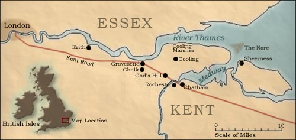
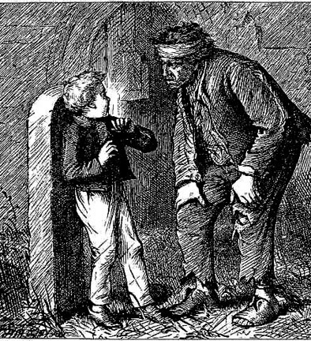
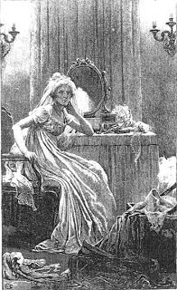
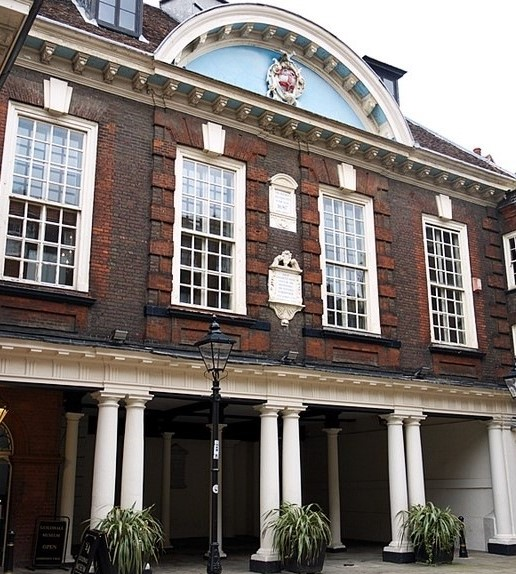
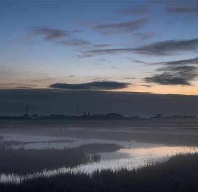

Literary Maps
Great Expectations
By Book
By Route
About
Request a Route
Contact

1

Just like Pip in the beginning of the story, you find yourself in St James graveyard in Cooling - be on the lookout for Magwitch.
2

Next stop is the Restoration House in Rochester, or Satis House, the home of Miss Havisham. Is she still wearing her wedding dress?
3

Now a museum with several rooms dedicated to Charles Dickens, visit the Guildhall in Rochester where Pip was bound as an apprentice.
4

Have a wander around the Kent marshlands, which serves as a bleak and misty setting for much of the book.